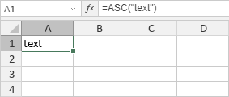

ASC funkcija
Funkcija ASC je jedna od funkcija za tekst i podatke. Koristi se za promenu znakova pune širine (dvobajtnih) u znakove polovične širine (jednobajtne) za jezike koji koriste skup dvobajtnih znakova (DBCS) kao što su japanski, kineski, korejski itd.
Sintaksa
ASC(text)
Funkcija ASC ima sledeći argument:
| Argument | Opis |
|---|---|
| text | Tekst ili referenca na ćeliju koja sadrži tekst koji želite da promenite. Ako tekst ne sadrži znakove pune širine, ostaje nepromenjen. |
Napomene
Kako primeniti funkciju ASC.
Primeri
Slika ispod prikazuje rezultat koji vraća funkcija ASC.
